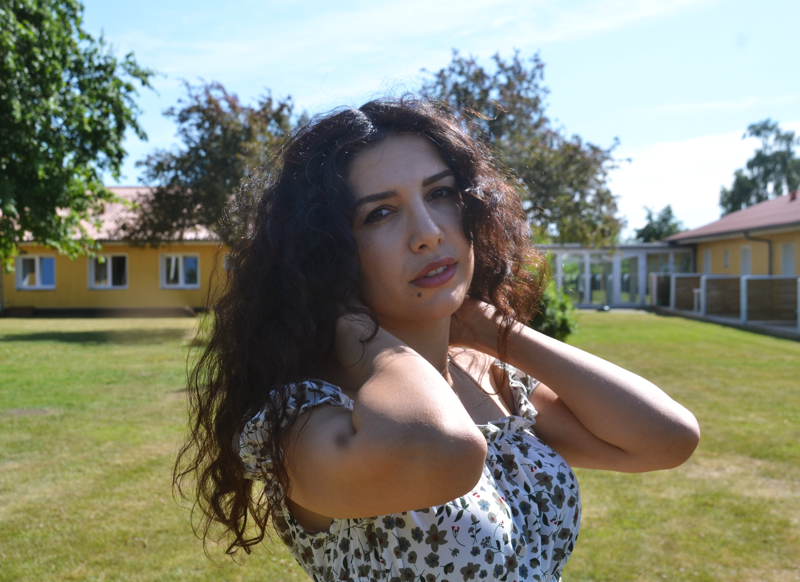
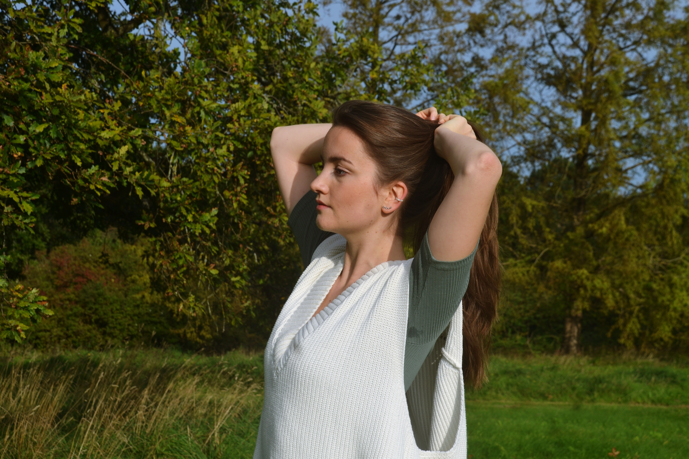
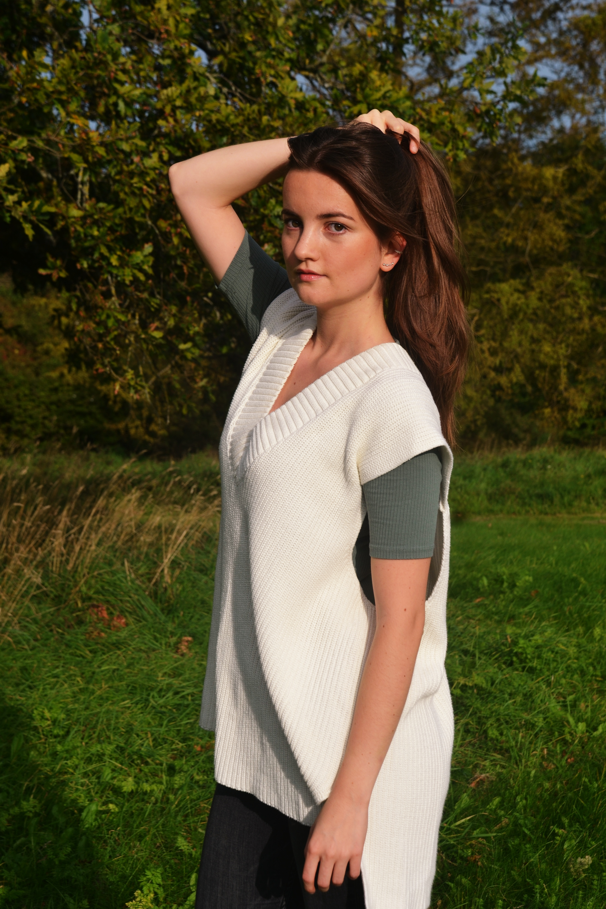
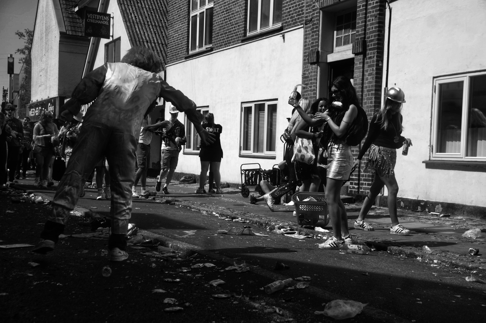

Portrait
My collection of portrait photographs.




Exploring people, places, cultures and everyday life through photography. A visual journal of places and moments that inspire me.

5 photographs

7 photographs
I am a freelance photographer interested in documenting everyday life, landscapes, people and cultures. Through my photographs, I try to capture the untold stories.